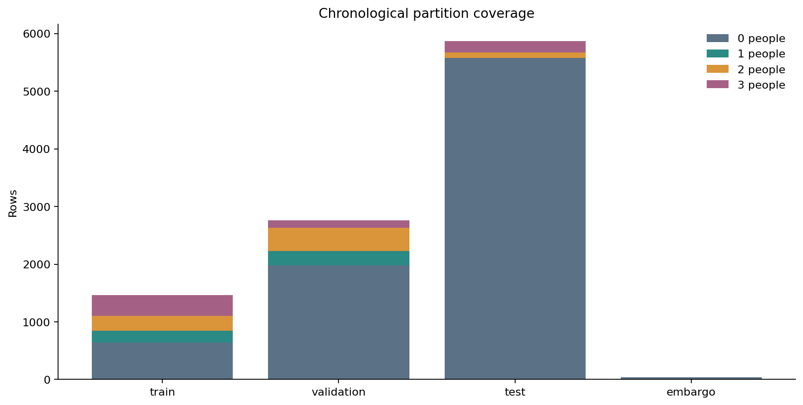
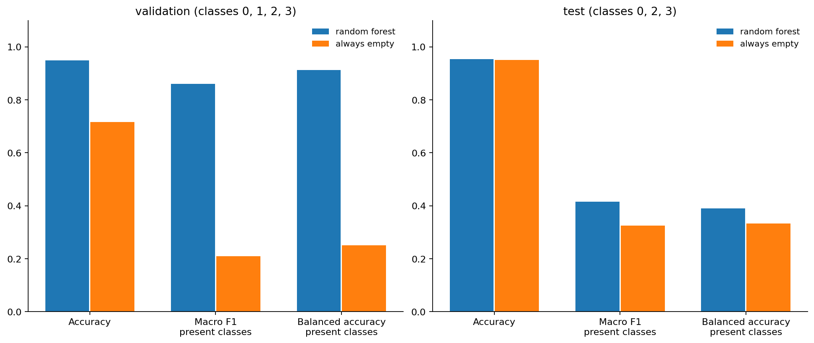
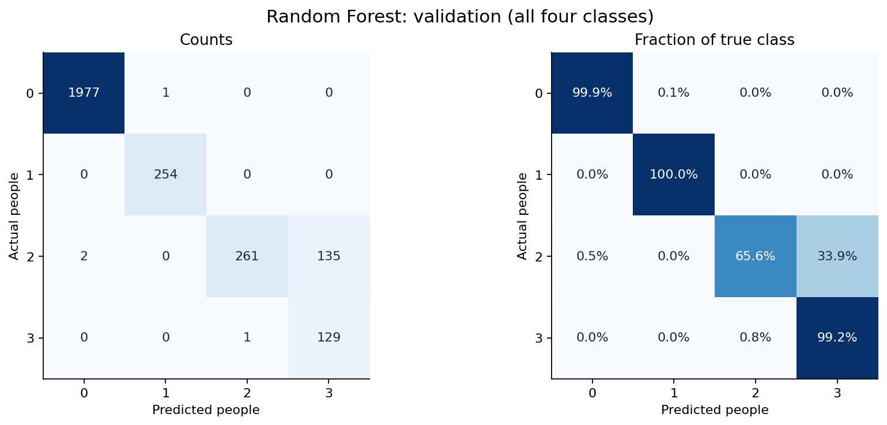
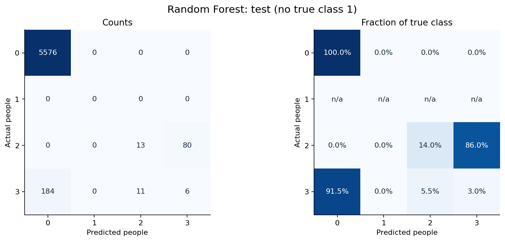
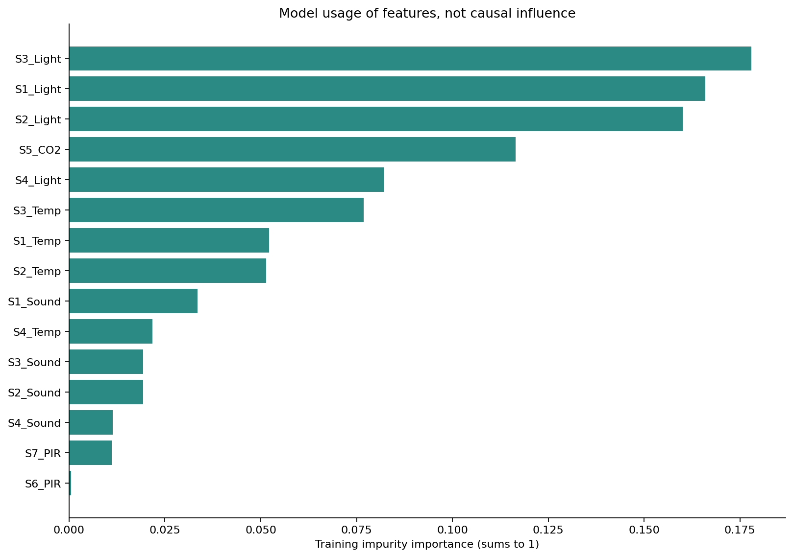

SOFT COMPUTING MINOR PROJECT / PHASE 2
Baseline occupancy prediction
15 sensor inputs. Random Forest. Chronological evaluation.
Validation accuracy: 94.96%
Four-class macro F1: 0.8608. Always-empty validation accuracy: 71.67%.
Later-test accuracy is 95.32%, but the test has no true class 1. Its scores cannot establish one-person detection.
Later-period occupied detection is weak: balanced accuracy is 38.99%, versus 33.33% for always empty. Two-person recall is 13.98% and three-person recall is 2.99%. Always-empty accuracy is 94.99%. High overall accuracy hides these failures.
All data were explored in Phase 1; the test is excluded from fitting and tuning.
Results
| model | partition | rows | accuracy | macro_f1_present_classes | macro_f1_all_four | balanced_accuracy_present_classes | weighted_f1 | true_classes |
|---|---|---|---|---|---|---|---|---|
| random_forest | train | 1462 | 0.9979 | 0.9973 | 0.9973 | 0.9969 | 0.9979 | 0,1,2,3 |
| random_forest | validation | 2760 | 0.9496 | 0.8608 | 0.8608 | 0.9119 | 0.9529 | 0,1,2,3 |
| random_forest | test | 5870 | 0.9532 | 0.4159 | n/a | 0.3899 | 0.9394 | 0,2,3 |
| random_forest | january_test_subset | 2045 | 0.8655 | 0.4047 | n/a | 0.3899 | 0.8277 | 0,2,3 |
| always_empty | train | 1462 | 0.4357 | 0.1517 | 0.1517 | 0.2500 | 0.2645 | 0,1,2,3 |
| always_empty | validation | 2760 | 0.7167 | 0.2087 | 0.2087 | 0.2500 | 0.5984 | 0,1,2,3 |
| always_empty | test | 5870 | 0.9499 | 0.3248 | n/a | 0.3333 | 0.9255 | 0,2,3 |
| always_empty | january_test_subset | 2045 | 0.8562 | 0.3075 | n/a | 0.3333 | 0.7899 | 0,2,3 |
Macro F1 and balanced accuracy labelled “present classes” average only classes with true support. Training scores are diagnostics. January is a subset of the later test, not independent evidence.
Class coverage

Compare with always empty

Validation: all four classes

Later test: class 1 absent

Training feature importance

What is saved
Model, input specification, source hashes, split manifest, row-level predictions, per-class metrics and plots. The saved model uses only December 22 training data.
Feature importance is a training diagnostic. No GA, fuzzy controller or measured energy-savings claim is included.